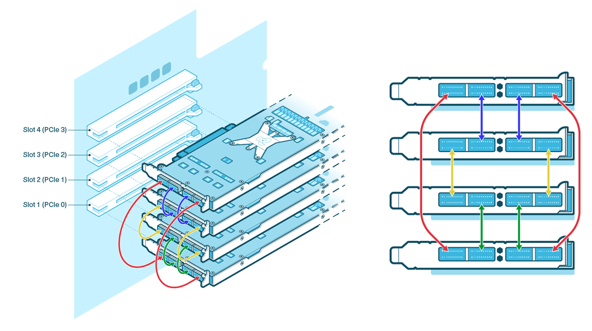
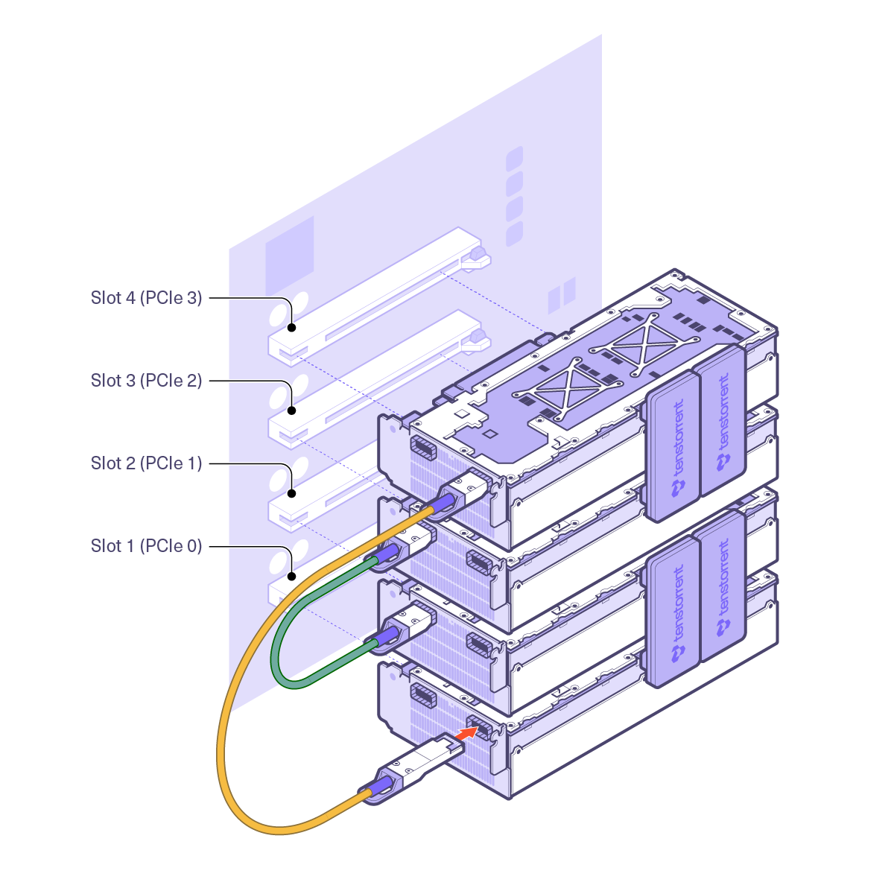

Receiving, Unboxing, and Setup
NOTE: Prior to unboxing your Tenstorrent TT-QuietBox™ Liquid-Cooled Desktop Workstation package, choose a clear, stable, and spacious area. The fully palletized, crated system is approximately 134 lbs. (61 kg) and the TT-QuietBox system itself is approximately 80 lbs. (36 kg). Ensure you have at least two people and enough room for them to maneuver comfortable around the crate and system.
Receiving
The TT-QuietBox system ships in a palletized wooden crate.
Verify the contents of your shipment. Contents include:
TT-QuietBox™ Wormhole (TW-04001) |
TT-QuietBox™ Blackhole (TW-04002) |
|---|---|
Tenstorrent TT-QuietBox Wormhole System |
Tenstorrent TT-QuietBox Blackhole System |
For unboxing, you will need:
Phillips head screwdriver
Scissors or similar cutting tool
Do not proceed with unboxing or installation if critical components are missing or you suspect shipping damage to the system itself. Please reach out to support@tenstorrent.com for help.
The TT-QuietBox system ships without an operating system installed. Tenstorrent recommends preparing a bootable USB flash drive with an installer for Ubuntu 22.04 LTS (Jammy Jellyfish) to ensure proper performance and compatibility with the Tenstorrent software stack; instructions are available on the Ubuntu website on how to create a bootable drive in Windows here.
Unboxing
1. Position the Crate
Ensure the crate is correctly positioned in your prepared unboxing area with ample maneuvering space for two people.
2. Open the Crate
Remove six (6) screws from the top of the crate using a Phillips head screwdriver. Once the screws have been removed, lift the top off of the crate.
3. Remove Boxed System from Crate
Remove the protective Styrofoam from the crate.
Using the two lifting straps looped around the cardboard box, lift the cardboard box vertically out of the wooden crate. Do not tilt the cardboard box sideways during this process.
4. Open the Cardboard Box
Cut the two lifting straps off of the cardboard box.
Open the top flaps of the cardboard box.
5. Remove the TT-QuietBox from the Cardboard Box
Lift the TT-QuietBox out together by reaching into the short sides of the box, securing your hands just underneath the supportive Styrofoam, and lifting the system out of the box.
Set the TT-QuietBox down in your workspace.
6. Remove Accessories and Additional Packing Material
Remove the Getting Started guide and the accessory bag from the box and set them aside for later use.
Remove any additional packaging from outside of the TT-QuietBox.
7. Inspect System
Inspect the TT-QuietBox to ensure everything is properly mounted and secured. Note that the system ships with sufficient liquid coolant for long term operation. There is no need to purchase and/or top up liquid coolant.
Setting Up Hardware
1. Connect Power Cables
Connect the provided C13 power cable to the TT-QuietBox and then to a dedicated outlet.
2. Connect QSFP-DD Cables
QSFP-DD cables are included with your TT-QuietBox to enable the high-speed interconnectivity between the Tenstorrent Tensix Processors. Follow the instructions for your TT-QuietBox model below for connecting the QSFP-DD cables; ensure the cables are aligned correctly and “click” into place. Do not force connections.
Blackhole™ p150c Version (TW-04002)
The Tenstorrent TT-QuietBox Blackhole (TW-04002) includes four Blackhole™ p150c Tensix Processors and eight (8) external QSFP-DD cables that enable the Tensix Processor mesh.
Customers will need to manually connect the QSFP-DD cables included. These diagrams display the system topology and where the included QSFP-DD cables need to be connected.

Wormhole™ n300 Version (TW-04001)
The Tenstorrent TT-QuietBox Wormhole (TW-04001) includes four Wormhole™ n300 Tensix Processors, internal Warp 100 bridges, and two (2) external QSFP-DD cables that enable the Tensix Processor mesh.

The TT-QuietBox ships with the Warp 100 bridges connected, but the QSFP-DD cables will need to be connected by the customer. This diagram displays the system topology and how the cards are enumerated, along with where the Warp 100 bridges are connected and where the included QSFP-DD cables need to be connected.

One QSFP-DD cable will need to be connected to Port 1 on the cards in Slots 1 and 4.
One QSFP-DD cable will need to be connected to Port 2 on the cards in Slots 3 and 2.
3. Connect to Network
For host system internet/network access, connect a standard Ethernet cable (Cat 6 or better, user-provided) to the primary RJ45 LAN port on the rear panel, labeled LAN3. Connect the other end to your network switch, router, or wall jack.
4. Connect Other Accessories
Connect your monitor, keyboard, and mouse (user-provided). The VGA-to-HDMI adapter is included for monitors that require HDMI input from the TT-QuietBox’s VGA source.
5. Power On
Locate the main power supply switch on the rear of the TT-QuietBox and switch it to the ON position.
Press the system power button on the front panel.
The system will power on. You should see activity on your connected monitor.
NOTE: The system’s initial hardware initialization before OS installation may take several minutes. You will eventually see a BIOS screen.
6. Install Operating System
The TT-QuietBox system ships without an operating system installed. Tenstorrent recommends preparing a bootable USB flash drive with an installer for Ubuntu 22.04 LTS (Jammy Jellyfish) to ensure proper performance and compatibility with the Tenstorrent software stack.
NOTE: TT-QuietBox uses an ASRock Rack SIENAD8-2L2T motherboard; the manual for that motherboard is available here.
To install Ubuntu 22.04 LTS (Jammy Jellyfish) from a USB flash drive, first plug in the drive to an available USB Type-A port.
You can either enter the system’s BIOS/UEFI setup to adjust the boot order or enter a boot menu during Power-On-Self-Test (POST):
Option 1: Adjust Boot Order
Power on or restart the system
Press the
F2orDeletekey during Power-On-Self-Test (POST) to enter UEFINavigate to the
BootsectionSet your USB flash drive as the primary boot device
Select
Save Changes and Exit; the system will restart and should now boot from your USB flash driveFollow the on-screen Ubuntu installation prompts
Installing Tenstorrent Software
Once the operating system is installed and functional, you can install Tenstorrent software by following the instructions here.
Additional Support/Troubleshooting
Frequently asked questions (FAQs) and troubleshooting steps are available here.
If you encounter any other issues, please reach out to support@tenstorrent.com.